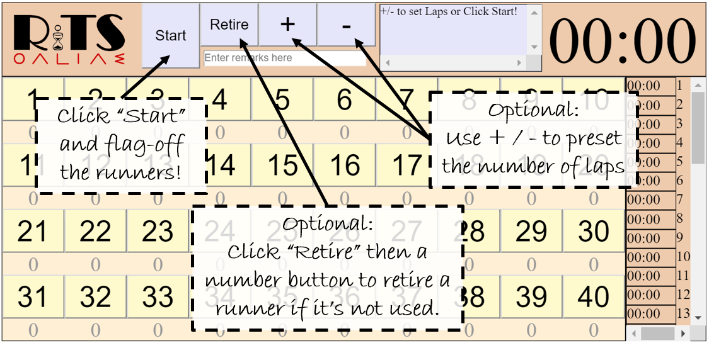
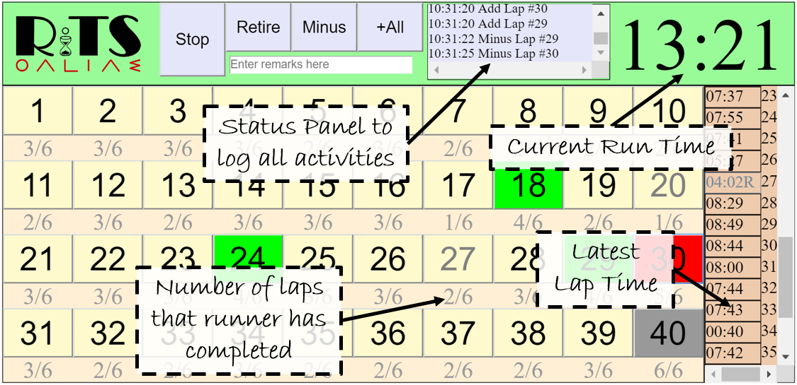
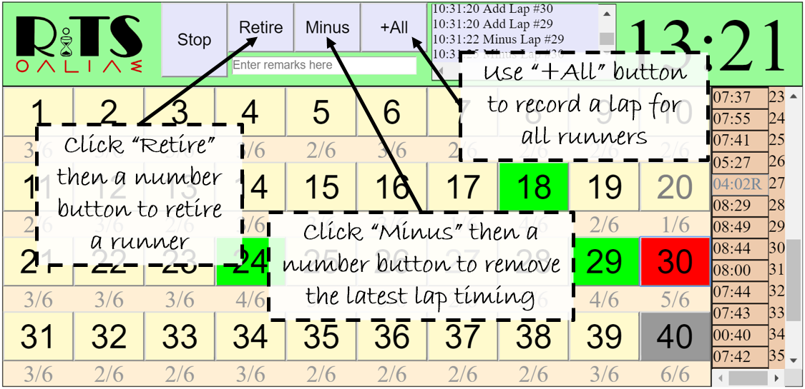
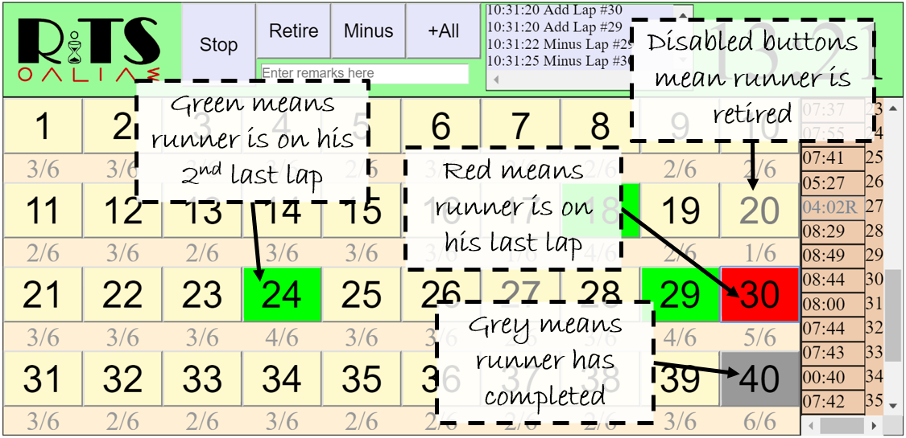

If you still have queries after looking through this page, please send an email to me at rickytan.pl@gmail.com and I will try to respond when I can.
Click
here to go back to RiTSonline.
Getting Ready for a run

Monitoring the run status

Managing interuptions

What do the colours mean?

What is RiTS and RiTSonline?
RiTS is a Real-time Interactive Timing System. In the simplest sense, it is an advance stopwatch or multitimer. It can be used to record the timing of a group of runners and all the split times are recorded too. The target subjects are runners who have a number tag on them.
RiTSonline is an online adaption of RiTS, allowing it to be deployed on almost all devices.
What is Minus?
When you accidentally added one lap for any runner, click on Minus to enable the Minus Mode, then click on the corresponding number button to minus off the latest lap. The system automatically toggles back to Normal Mode after that.
What is Retire?
Click on Retire to enter Retire Mode. Before starting the run, use the Retire Mode to disable any number button that is not used. i.e That number tag is not used in the run. This helps to prevent clicking on the wrong number button later on.
The Retire Mode can also be used to indicate that a runner has stopped running. Click on Retire to enter Retire Mode, then click on the corresponding number button. The system automatically toggles back to Normal Mode after that.
What is the +All button for?
It adds 1 lap for all runners(except the retired ones). This function is especially useful for the first few rounds of a round, when runners tend to be bunched together. Instead of frantically scrambling to click on individual runners as they pass, you can just track the slowest runner, and click +All when he crosses the checkpoint, adding 1 lap for all runners. Do note that the timing for everyone for that lap would be that of the slowest runner.
I noticed a delay when I click some buttons. Why is this so?
You are likely using this on an iPad or similar multitouch capable devices. These devices register the touch only about 300ms after the initial touch. This is a technical limitation for all touch devices that support multitouch. Fret not though, as the delay for the 40 lap buttons have been switched off. Only buttons in the header have the delay.
My Chrome Browser/Gmail on my device crashes when I want to email results. What can I do?
This issue is observed when Gmail is the default mail app for the Chrome browser. In Chrome settings, change the default mail app to another app like Apple Mail, etc.
On the Results page, when I try to send email, why do I keep getting a prompt to set up my email?
The send email function of RiTSonline uses your device's Mail application to send the results. Therefore, you need to have your Mail application setup properly before using this function. If you do not want to do so, try copying and pasting your results to a suitable application like Notes.
Are the data Excel friendly?
You can paste the text data in to Excel and then use simple formulae to extract the individual lap timings. These can then be used to do further analysis like plotting a graph or populating it to a database.
Can RiTSonline send results directly to cockpit? [Singapore Schools specific FAQ]
No. It cannot. However, you can use simple Excel formulae to extract your data and use the OPM module from cockpit to import the data. Click here to download a sample that you can use on your computer. This will reduce the need to manually key results into cockpit. A simple guide on how to interfact with cockpit is available here.
RiTS was developed for the windows platform using VB and requires the .net framework to run. RiTSonline(this website you are at), is an online adaptation of RiTS, coded in HTML5, JavaScript and CSS3. As RiTSonline uses client-side scripting, exporting the data out is a challenge. At present, results can be emailed as the body of an email message composed using the device's email client. Alternatively, the user can use the Copy/Paste feature of their device to paste the result to a Notes App.
Can I increase the number of runners beyond 40?
Due to a number of requests from users, RiTSonline-44 was developed. It increases the number of runners to 44. Click here: 44pax version to access it. The link is also available at the bottom right of the page.
Who made this?
RiTS and RiTSonline are developed by Ricky Tan, a PE Teacher in Singapore. It was formerly named Ricky's Timing System (RiTS too) but was later changed. The acronym however, still hints at its origin. The department that Ricky worked at affectionally calls the system the "Tap-Tap" system.
Who can use it?
Anyone can use this free of charge. Do note the technical limitations though.
What are the technical limitations?
RiTSonline can only run on web browsers that supports HTML5. This includes the majority of modern browsers. It has been tested to work properly in Safari and Chrome. Internet Explorer 8 has partial support and does NOT support the linkage to the Results page. The main ritsonline.html page works so long as JavaScript is enabled.
RiTSonline should be used on a touch device. Inputs will be much slower using a mouse or touchpad. It has been tested extensively on the iPad and iPad Mini, but should also scale automatically on other modern devices based on the height of the browser window.
As the system was developed with the intent of using it on an iPad, it was heavily tested with both the iPad and the iPad mini. Running it on other devices may result in some cosmetic inconsistencies like a weird layout or different appearance of certain elements. However, the core functionality should still be there.
If you experience other technical difficulties, try a different browser or email client.